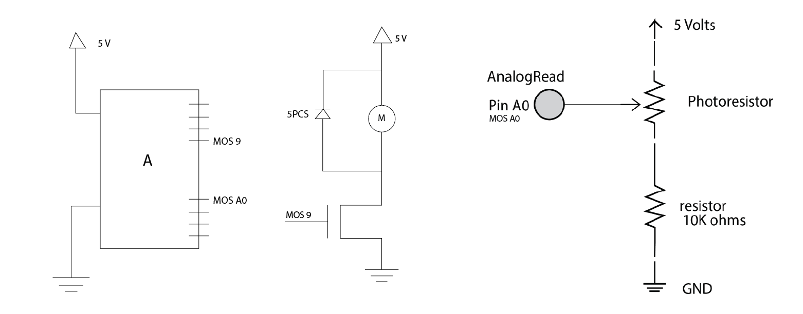

This shows the motorized ceiling mobile. When the light turns on, the mobile starts. When the light turns of the mobile slows down and stops.
This picture shows the circuit.

This is the schematic for the circuit. The transistor can handle a max of up to 30V, therefore connecting the circuit to a power source of 5 volts is less than 30V and will be sufficient. Because of this, the current from 5 volts will be less than the max amount of current that a transistor can take due to V=IR. The resistance for R2 in the circuit with the photoresistor in a voltage divide was calculated based on the range of signal I wanted to measure. Photoresistor resistance ranges from about 0.9K Ohms tooo 9.6K Ohms. Therefore, Halfway = R1High - ((R1High - R1Low)/2) = 9.6K Ohms - ((9.6 K Ohms - 0.9K Ohms)/2) = 5.3K Ohms Therefore R1 (photoresistor) = 5.3K Ohms R2 = (Vout*R1)/(Vin-Vout) = (3.3*5.3K)/(5-3.3) = 6.4K Ohms I selected a large R2 because having smaller resolution is fine for my application.
int transistor = 9; // the PWM pin the transistor is attached to
int strength = 0; // how fast the motor is spinning
int fadeAmount = 10; // how many points the speed that the moder will fade by`
void setup() {
//cs_4_2.set_CS_AutocaL_Millis(0xFFFFFFFF); // turn off autocalibrate on channel 1 - just as an example
Serial.begin(9600); //
// declare pin 9 to be an output:
pinMode(transistor, OUTPUT);
}
void loop() {
// read the input pin:
int sensorValue = analogRead(A0);
// map it to the range of the analog out:
int outputValue = map(sensorValue, 375, 900, 0, 255);
// print out the results to the Serial Monitor:
Serial.print("sensor = ");
Serial.println(sensorValue);
Serial.print("output = ");
Serial.println(outputValue);
delay(1000); // arbitrary delay to limit data to serial port
// Make the motor spin when the light is turned on
if(outputValue > -90) {
// set the strength of pin 9:
analogWrite(transistor, strength);
// change the strength for next time through the loop:
strength = strength + fadeAmount;
// reverse the direction of the fading at the ends of the fade:
if (strength <= 0 || strength >= 255) {
fadeAmount = -fadeAmount;
}
// wait for 10 milliseconds to see the dimming effect
delay(10);
Serial.print("!! ");
}
}
This is the arduino code that I used to make the motor turn on and increase and